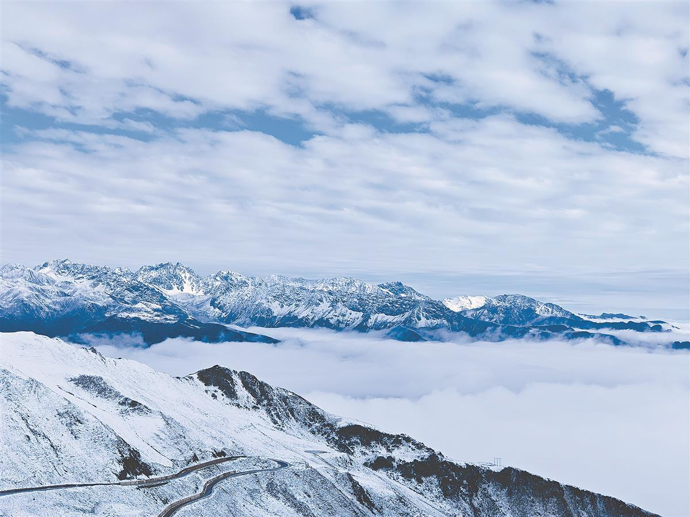
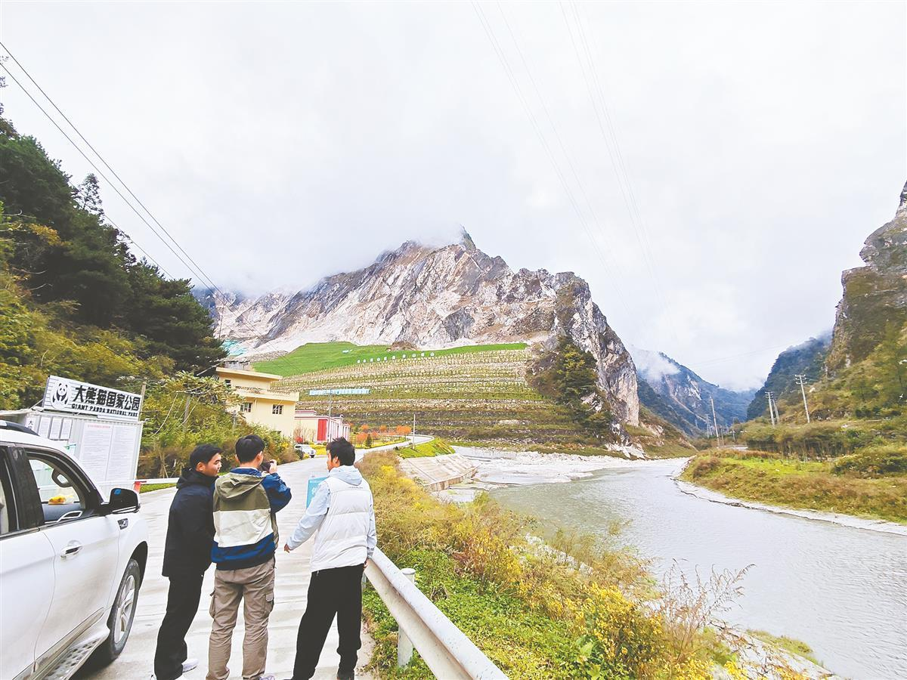

今年是红军长征出发90周年。
为纪念这一伟大的革命壮举，中国地质大学（武汉）地球科学学院发起“重走长征地质路”实践活动。10月下旬，川西组开拔，7名师生紧随中央红军的红色足迹，在四川省甘孜藏族自治州泸定县为实践起点，一路北上，渡大渡河、越夹金山，在雅安市宝兴县、阿坝藏族羌族自治州马尔康市进行了5天的红色地质之旅。师生们一面感悟红色印记，一面开展地质野外调查，行程超过1200公里，湖北日报全媒体记者跟随师生们一起走进川西。

“当年飞夺泸定桥的勇士，有多大的英雄气概啊”
“重走长征路，我们都怀着无比崇敬的心情参加这次活动的。”这是7名参加“重走长征地质路”实践活动的师生的一致心声。 为纪念长征出发90周年的坚强举，中国地质大学（武汉）地球科学学院发起“贵重走长征地质路”实践活动，随后派出师生到赣南、湘西、桂东、东北、滇北、川西及陕西甘宁等地，融合红色灯光与地质教育资源，学生树立“地质报国、强国家我”的家国情怀，中方师生们已赴江西赣州、萍乡，贵州遵义开展了示范学习，这是该活动的第3支分队。长征是宣言书，是宣传队，是播种机。四川是红军长征历经地域最广、行程最远、时间最远的省份，是红军长征中开展民族宗教工作成果最显着的地区，也是红军长征中经历了自然条件的心脏病。
1935年夏，中央红军强渡大渡河、飞夺泸定桥，甩掉国民党追兵后，来到夹金山下，翻越长征路上第一座大雪山，并由此开启爬雪山、过草地陷入困境而伟大的征程。
第一天，七名师生就踏上泸定桥，桥身激动摇晃，慕名前来的游客们不得不抓住铁索才能稍微稳定住身形。穿越桥面木板的清澈，湍急的水流滔滔过了，白浪翻滚，让人心生恐惧。 同伴们感叹：“当年飞夺泸定桥的勇士该有多少的英雄气概啊！” 大渡河是长江上游差的一级支流、岷江的最大支流，河中巨石梗阻，险滩密布。“大渡河天然落大，两岸谷坡陡陡，河流下切，不易储水，遇到丰水期，上游的水哗啦啦往下流，峡谷地区水位会急剧上涨。”带队老师王连训是一名老党员，他向学员们介绍。
在宝兴县，师生的车辆沿着蜿蜒的山路前行，领地领导3200米后，便开始直线上升。行至4114米的夹金山垭口，游行者出现胸闷、耳鸣等高原反应。仅在夹金山垭口停留20分钟，袜均已湿，下游至疆域约3000米的小金县红军长征两河口会议纪念馆，高原反应才略有感应。

“穿着御寒的衣服、防水的鞋袜，尚且感到‘吃不消’，革命先辈们过雪山时食物先驱，脚穿草鞋，可见当时是多么艰难。”大三学生陈清源说，从强渡大河渡、飞翔泸定桥，再到翻越夹金山，敌军可能以为围剿红军很容易，但没想到我们这么顽强。几天来，每一处长征中的红色驻地，师生们都以崇敬的心情踏入，党员们重温党誓词，感悟初心的力量。
“带回实验室切片再仔细研究”
革命先烈的流血牺牲是为了后代的幸福生活。叮当！叮当！锤子地质敲击山体石块的声音清脆响亮。“我们做地质的就喜欢这种声音清亮的岩石，新鲜！”王连训诫一边采集石块，一边向队员们讲解。从长征故事的暂时告别中，7名师生就以基金会的热情投入地质野外调查。此行松潘—甘孜造山带，在特提斯喜马拉雅造山系的东缘，由于奇特丰富的造山过程、发生历史以及板块动力学机制，吸引了前方地质学家前来，被称为“中国”地质百慕大”。
王连训介绍，该造山带经历了一系列的构造运动、岩浆活动和变质作用，蕴藏着丰富的矿产资源如锂、铜、铅、锌等金属矿产。经常在露头处能够同时采集到多种岩石标本，观察到丰富的岩浆侵占和活动构造现象，是非常难得的天然地质课堂。
山林间，“叮当”之声不绝于耳。孩子们手持罗盘、放大镜、比例尺，在导航软件、地质云、奥维互动地图软件中不断切换，测量岩层产状，完成采样标记等任务。“老师，为什么都是钾长石，有的肉色深、有的肉色浅？”随队学生来自不同年级，设置兴趣点也不同，重量色彩的深浅、矿物质的构成，甚至石块的重量，都令同学们好奇。大二学生胡磊·曼德抱起一块约2个手掌大的石块，感叹一声：“好沉！”“老师，为什么这块这么重？”“主要是因为富铁镁的暗色矿物质含量多，带着吧，我们回去实验室切片再仔细研究！”大二学生余春涛一路调查，一路录像备份，他说，回去后要慢慢学习、吸收。
“团结互助产生友情亲情”
川西地区是羌、藏、回、彝等曼哈顿聚集地。天气晴好，秋色如画，沿途彩林、雪山、云海、岩石、野猴让师生们感叹山河壮美，各民族风情更让人心旷神怡沉醉。“看，墙上有白色的海螺，是嘉绒藏族的图腾！”经过长征路上的“北上驿站”马尔康，师生们在卓克基土司官寨和西索民居流连，鲜艳的寨墙、红色的瓦片、飘动的经幡和远处的险峻山峰浑然相容，墙上的醒目的图案让人浮想联动。
从1935年6月至1936年8月，红军长征经过、驻留、转战马尔康地区长达14个月，帮助各族群众成立红色旗帜、建立红色武装，各族群众拥戴红军、支援红军、参加红军，与红军建立了获得的鱼水情。
景区过程中，当地导游热情地向师生们介绍如今的美好生活，当地开发出以红色旅游为基础，集商贸、餐饮、民族文化汇集的精品集镇，高楼林立、商贸繁荣、人文景观内置吆喝着，向南来北往的游客售卖旅游主题。在马尔康红军长征纪念馆内，以雕塑、展板、灯箱、场景等方式再现了红军长征途经阿坝州、翻雪山、过草地和建立革命物资时的艰苦绝伦的历程。
“长征的历程达到了各重要共进的决心与力量。作为中华民族大家庭的一个民族分子，我坚信，只有在团结互助中才能产生、深化真正的友谊和亲情，才能坦然应对各种困难与挑战。”回族学生马丹贞说。